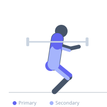
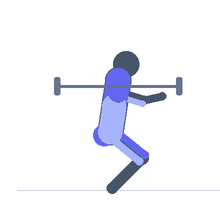

Exercise guide / Barbell Snatch
Barbell Snatch
The barbell snatch is one of the two Olympic weightlifting competition lifts, in which the athlete lifts the barbell from the floor to a locked-out overhead position in a single continuous movement, catching it in an overhead squat. The lift demands exceptional full-body power production, bar speed, coordination, shoulder mobility, and hip flexibility. It is among the most technically complex and physically demanding exercises in strength sports and develops explosive power, coordination, and total body strength simultaneously.
Primary muscles
gluteus maximus
rectus femoris
vastus lateralis
trapezius upper
deltoid anterior
Secondary muscles
erector spinae
biceps femoris long head
latissimus dorsi
triceps long head
Stabilizers
transverse abdominis
infraspinatus
supraspinatus
Equipment
Standard Barbell
Weight Plates
Optional
Power Rack (Squat Cage)


Starting position
- Stand with the barbell over the mid-foot. Take a wide snatch grip (outside the knees), feet hip-width apart. Bar is touching the shins, hips above knees, shoulders above the bar, back flat.
Setup
- Use bumper plates and a lifting platform. The snatch grip width is determined by holding the bar in the hip crease with arms extended — the bar should contact the hip crease on extension. Warm up thoroughly.
Steps
- Step 1: Set the starting position — bar over mid-foot, wide grip, flat back, hips between shoulders and knees.
- Step 2: First pull (floor to knee): drive legs into the floor to separate the bar from the ground, keeping the back angle constant and bar close to the body.
- Step 3: Second pull (knee to hip): as the bar passes the knee, accelerate the legs further and open the hip powerfully while keeping the bar close to the thigh.
- Step 4: Third pull (extension and turnover): at full hip extension, shrug the traps and pull the elbows high and outside. As the bar travels upward, pull yourself under the bar and rotate the hands into the overhead position.
- Step 5: Catch in an overhead squat, stand to full extension, and lower the bar with control.
Coaching cues
- Lats on — keep the bar close
- Hips through — open explosively at the top
- Punch up and pull under
Breathing
- Take a deep breath and brace before the lift. Hold the brace through the second pull. Exhale at the top after securing the catch.
Range of motion
- The bar travels from floor to fully locked overhead in an overhead squat catch. Full hip extension at the second pull is essential.
Tempo
- Explosive — the entire lift should be completed in under 2 seconds once initiated. There is no tempo prescription; maximum bar speed is the goal.
Common mistakes
- Early arm bend (pulling with the arms before the hip extension)
- Bar drifting away from the body during the first pull
- Insufficient hip extension before the turnover
- Catching with soft elbows overhead
Safety
- Requires extensive technical coaching before loading significantly.
- Always use bumper plates and a lifting platform for safe drops.
- Never train to failure — drop the bar if the catch is compromised.
Training
- strength: 1–3 reps
- power: 1–5 reps
- strength: 3–8 sets
- power: 4–8 sets
- Rest: {'strength': 240, 'power': 180}